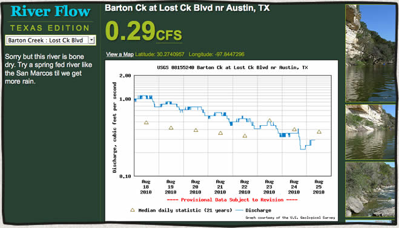

Texas River Flow, my 10k contest entry
posted Aug 25, 2010 Part of the app is currently broken due to a change in the USGS api.
My entry in the aneventapart10k contest is a little application that lets you check the river flow (cfs) of Texas rivers. The application gets it’s data from the “USGS water data service“//waterdata.usgs.gov/nwis along with related photos from flickr.
Read more...The Devils River, Memorial Day 2010
posted Jun 21, 2010
Put in at Baker’s Crossing on Friday, May 28th and paddled to The Indian Head Ranch 40 miles down river.
Read more...Devils River Kayaking, July 4th 2009
posted Jul 22, 2009
We put in the kayaks at Bakers Crossing on Friday, July 3rd. The next 2 days we covered 23 miles to our take out at Gerald Baily’s place, Devils River Outfitters.
Read more...Devil's River Kayaking
posted Apr 14, 2009
On Friday, November 28th through Monday, December 1st Mike Longfellow and I paddled the Devils River from Baker’s Crossing to Rough Canyon Marina (47 miles). This river is notoriously pristine and remote. The weather was perfect and there was plenty of good fishing and rapids along the way.
Comment [3]
Read more...Tubing and Kayaking Barton Creek
posted Mar 12, 2009
Barton Creek, on the green belt in Austin, is usually a dry, rocky creek bed. Every few years we are lucky enough to receive enough rain in the area to fill it up long enough for a few runs in the tubes or kayaks. 2007 was the last year the creek maintained enough water to run.
Read more...404 Not Found
Sorry, the page you're looking must be somewhere else.
The Devils River, Memorial Day 2010
posted Jun 21, 2010
Put in at Baker’s Crossing on Friday, May 28th and paddled to The Indian Head Ranch 40 miles down river.
Read more...Devils River Kayaking, July 4th 2009
posted Jul 22, 2009
We put in the kayaks at Bakers Crossing on Friday, July 3rd. The next 2 days we covered 23 miles to our take out at Gerald Baily’s place, Devils River Outfitters.
Read more...
Get in touch
Patrick@MountainDrawn.com
Article Categories
Friends
- Darren Poore Photographics
- DHL Creative
- Holly Henderson Photography
- JH Jackson Photography
- Leonard Maiden Studios
- Sundry Studio